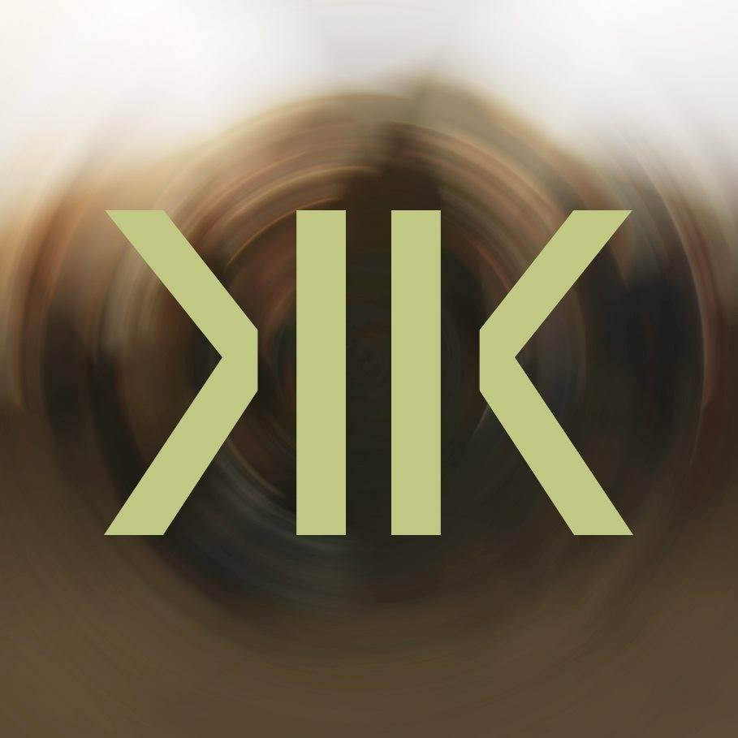

Kdo jsme


Jsme Kafe koláč!
Magdaléna a Kryštof rádi si užíváme dobré jídlo. Ať už je to jídlem, místem nebo lidmi se kterými
jej jíme.
Kryštof začal ochutnávat presa, espressa a filtry v pražských kavárnách kolem roku 2015 a od roku 2016 se
aktivně zajímá o výběrovou kávu, její přípravu a proces pražení. Stále ho baví ochutnávat svět kolem sebe.
Majda peče výborné domácí koláče, buchty, štrůdly nebo dorty většinou dle svých vlastních, rychlých a osvědčených receptů.
Ti dva se skvěle doplňují asi tak jako šálek dobře připravené kávy s láskou upečeným kusem koláče.
Pro koho ?

Pro každého.
Máš rád kávu? Ujíždíš si na domácích koláčích?
Chceš potkat skvělé lidi a krásná místa v Praze?
Tak přijď mezi nás!
A
potkej,
poznej,
ochutnej!
♥
Akce
Pořádáme akce kde nás můžeš potkat se všemi, kdo zrovna přijdou, ochutnat čerstvě namletou a připravenou
výběrovou
kávu s koláčem. Tak neváhej a přijď!
- 8/4/2021 7:00-8:45 Snídaně na Karlově mostě
menu: sázená vejce na másle na pořádném krajíci chleba + kopřivový čaj
káva: výběrová single origin káva El Salvador
pražírna: Šťastné kafe (praženo ve first crack)
příprava: moccamaster
- 22/4/2021 17:00-19:30 Pod rozkvetlými mandloňi na Petříně
menu: tvarohovo-makový kynutý koláč + lipový čaj
káva: výběrová single origin káva Brazil
pražírna: Drop coffee roasters (SWE)
příprava: moccamaster
- 6/5/2021 17:00-19:30 Lásky čas na Vyšehradě
menu: linecký křehký koláč + růžový čaj
káva: výběrová single origin káva ethiopie
pražírna: FORMAT COFFEE
příprava: moccamaster
♥
Kontakt
KafeKoláč s.r.o.
IČ: 0429 0348
Nemůžeš nás najít?
tel.: 721 158 627
fb: @KafeKoláč
fotky a recepty na ig: @KafeKoláč
dotazy a spolupráce piš na: email@kafekolac.com